18 Regresión Lineal
Fecha de la ultima revisión
## [1] "2025-09-17"

Activar las librerias, averiguar que TIENE instalado estos paquetes
La regresión lineal es el modelo básico de evaluar si hay una relación lineal o sea recta entre dos variable. Esta relación entre las variables puedes ser positiva o negativa. Hay otro tipos de regresión, que incluye regresión no lineal tal como cuadrática \[x^2\] o cúbica \[x^3\], logarítmica \[log(x)\] entre muchas otras alternativas.
Aquí estaremos evaluando solamente la regresión lineal
Primero paso es subir los datos:
El números de barres en un bario y la cantidad de asesinados en este barrio (Datos ficticios)
| pubs | mortality |
|---|---|
| 10 | 1e+03 |
| 20 | 2e+03 |
| 30 | 3e+03 |
| 40 | 4e+03 |
| 50 | 5e+03 |
| 60 | 6e+03 |
| 70 | 7e+03 |
| 500 | 1e+04 |
pubs2=tribble(~pubs, ~mortality,
10, 1000,
20, 200,
30, 30,
40, 4,
50, 1)
pubs2| pubs | mortality |
|---|---|
| 10 | 1e+03 |
| 20 | 200 |
| 30 | 30 |
| 40 | 4 |
| 50 | 1 |
# Cambiamos los nombres de las columnas
pubs=pubs%>%
dplyr::rename(barres=pubs, mortalidad=mortality)18.1 la función lm()
Como hacer un regresión lineal (Linear Regression) simple, usando la función lm(), para “linear model”= modelo lineal. Una regresión necesita dos variable continuas (vea el módulo de correlación). Es importante que estas variable tenga una distribución normales. La diferencia entre una correlación y una regresión es que la primera es un análisis que describe el patrón y en la segunda es que no solamente describe el patrón pero hace predicción sobre la relación entre las variables. Usando la regresión uno calcula tambien una linea que describe la relación entre las variables. Esta variable se puede describe como \(y=m_x+b\) donde la m representa la pendiente y la b representa el intercepto. También lo pueden ver en libros de la siguiente forma \(y=\alpha+\beta_x\) donde la \(\beta\) beta representa la pendiente y la \(\alpha\) el intercepto.
La formula de lm() se compone de lm(y~x, data= “df”). Nota la tilde ~. Hay dos pruebas la priemra para determinar si \(\alpha\) es distinto de cero. La hipótesis nula es
Ho: el intercepto \(\alpha\) es igual a cero Ha: el intercepto, \(\alpha\) no es igual a cero. Entonces el punto donde la linea intercepta el cero puede estar mayor de o menor de cero.
La segunda hipótesis nula es que la pendiente es diferente de cero, esto quiere decir que la pendiente no sugiere un patrón de aumentar y disminuir entre las dos variables.
Ho: la pendiente \(\beta\) es igual a cero Ha: la pendiente, \(\alpha\) no es igual a cero. Entonces la relación entre las dos variables es o positiva o negativa.
Ahora evaluamos los resultados de la regresión entre el número de barres en un vecindarios y la mortalidad en este mismo sector. Se observa que los coeficientes de la linea son \(y=3352+14.3*x\). Entonce el intercepto en cero comienza en 3352 fatalidades y por cada bar suplementario hay 14.3 más fatalidad.
Ahora para determinar si estos valores son significativo hay que evaluar el valor de p en cada linea. La hipótesis nula del intercepto tiene un valor de p =0.005, que sugiere que se debería rechazar la hipótesis nula, y por consecuencia aceptamos la hipótesis alterna. La pendiente tiene un valor de p=0.015 y también se rechaza la hipotesis nula.
##
## Call:
## lm(formula = mortality ~ pubs, data = pubs2)
##
## Residuals:
## 1 2 3 4 5
## 314.2 -266.4 -217.0 -23.6 192.8
##
## Coefficients:
## Estimate Std. Error t value Pr(>|t|)
## (Intercept) 905.200 305.483 2.963 0.0594 .
## pubs -21.940 9.211 -2.382 0.0974 .
## ---
## Signif. codes: 0 '***' 0.001 '**' 0.01 '*' 0.05 '.' 0.1 ' ' 1
##
## Residual standard error: 291.3 on 3 degrees of freedom
## Multiple R-squared: 0.6541, Adjusted R-squared: 0.5389
## F-statistic: 5.674 on 1 and 3 DF, p-value: 0.09744
#summary(pubReg) # Si no se acuerda de la funcíon que sigue
tab_model(
pubReg,show.df = TRUE,
CSS = list(
css.depvarhead = 'color: red;',
css.centeralign = 'text-align: left;',
css.firsttablecol = 'font-weight: bold;',
css.summary = 'color: blue;'
)
)| mortalidad | ||||
|---|---|---|---|---|
| Predictors | Estimates | CI | p | df |
| (Intercept) | 3351.96 | 1440.34 – 5263.57 | 0.005 | 6.00 |
| barres | 14.34 | 3.82 – 24.86 | 0.016 | 6.00 |
| Observations | 8 | |||
| R2 / R2 adjusted | 0.649 / 0.591 | |||
18.2 Visualización de la regresión
Se observa que hay un aumento en fatalidades con aumento en el número de barres. Pero nota el valor a la derecha que parece ser muy atípico comparado a los otros.
ggplot(pubs, aes(x=barres, y=mortalidad))+
geom_smooth(method = lm)+ # modelo lineal
geom_point()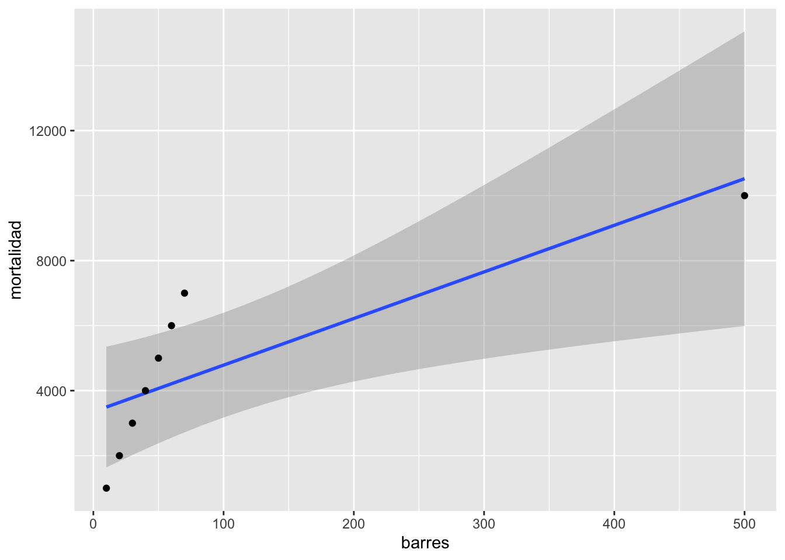
datosP=tribble(~edad_casar, ~Num_hijos,
NA, 10,
22, 3,
17, 2,
18, 2,
21, 5,
20, 3,
37, 2)
datosP| edad_casar | Num_hijos |
|---|---|
| 10 | |
| 22 | 3 |
| 17 | 2 |
| 18 | 2 |
| 21 | 5 |
| 20 | 3 |
| 37 | 2 |
##
## Call:
## lm(formula = Num_hijos ~ edad_casar, data = datosP)
##
## Residuals:
## 2 3 4 5 6 7
## 0.15275 -0.98639 -0.95857 2.12492 0.09709 -0.42981
##
## Coefficients:
## Estimate Std. Error t value Pr(>|t|)
## (Intercept) 3.45949 1.84040 1.880 0.133
## edad_casar -0.02783 0.07839 -0.355 0.741
##
## Residual standard error: 1.287 on 4 degrees of freedom
## (1 observation deleted due to missingness)
## Multiple R-squared: 0.03054, Adjusted R-squared: -0.2118
## F-statistic: 0.126 on 1 and 4 DF, p-value: 0.7405
ggplot(datosP, aes(y=Num_hijos, x=edad_casar))+
geom_smooth(method = lm)+ # modelo lineal
geom_point()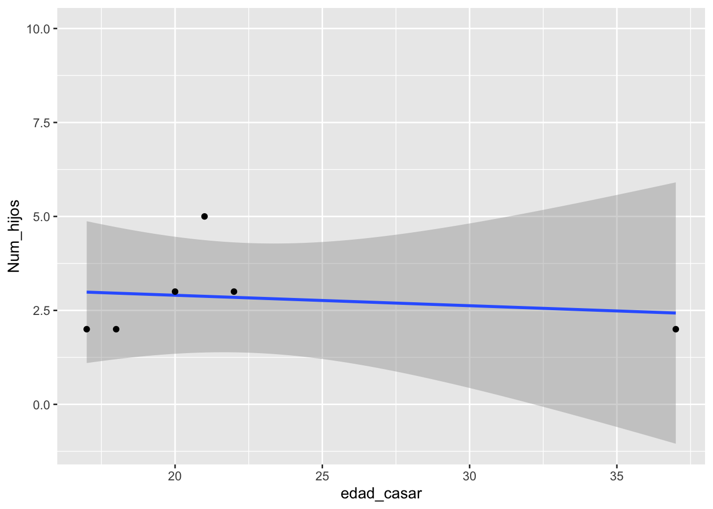
18.3 El impacto de valores atípico
En cierta ocasiones valores fuera de lo normal pueden hacer grandes cambios en el resultado, en este caso la regresión. ¿Cual es el efecto del valor grande? Removemos ese valor del archivo de datos y revaluamos el modelo (la regresión lineal). Nota que ahora el modelo es sumamente diferente \(y=-163.7+103.2*x\). ¿Ahora se rechaza las dos hipótesis?
pubsnew <- pubs[ which(pubs$barres<80), ] # remover el valor grande
pubsnew=pubsnew %>%
add_row(barres = 4, mortalidad = 0) # Añadiendo un par de valores
pubRegNew <- lm(mortalidad~barres, data = pubsnew)
#summary(pubRegNew)
tab_model(
pubRegNew,show.df = TRUE,
CSS = list(
css.depvarhead = 'color: red;',
css.centeralign = 'text-align: left;',
css.firsttablecol = 'font-weight: bold;',
css.summary = 'color: blue;'
)
)| mortalidad | ||||
|---|---|---|---|---|
| Predictors | Estimates | CI | p | df |
| (Intercept) | -163.70 | -374.14 – 46.73 | 0.106 | 6.00 |
| barres | 103.20 | 98.18 – 108.23 | <0.001 | 6.00 |
| Observations | 8 | |||
| R2 / R2 adjusted | 0.998 / 0.997 | |||
ggplot(pubsnew,aes(x=barres, y=mortalidad))+
geom_smooth(method=lm)+
geom_point()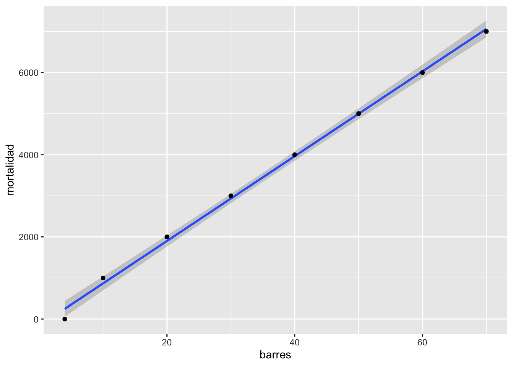
18.4 La venta de discos de música
Ahora un set de datos más complejo y más realista a los que uno encontraría en un estudio de en medicina, sociología o ecológica.
Los datos representa la cantidad de dinero dedicado a la promoción de diferentes CD’s de una compañia de música y la cantidad de CD (CD/downloads) vendido. El la primera linea se observa la cantidad de libras esterlina, £ (UK) dedicado a la promoción del album de música, en la primera linea vemos que se gasto £10,256, y después la cantidad de CD vendido fue 330.
library(readr)
Album_Sales_1_new <- read_csv("Data_files_csv/Album_Sales_1_new.csv")
head(Album_Sales_1_new)| adverts | sales |
|---|---|
| 10.3 | 330 |
| 986 | 120 |
| 1.45e+03 | 360 |
| 1.19e+03 | 270 |
| 575 | 220 |
| 569 | 170 |
length(Album_Sales_1_new$adverts) # cuantas files de datos hay en el data frame## [1] 200Comenzamos con hacer un gráfico entre las dos variables. Nota que en la parte de geom_smooth(), tiene que incluir method=lm, esto significa que el método de construir la linea usara la regresión lineal. Se añade a la función lineal \(\epsilon\) que representa los errores de los valores al comparar con la linea que representa el mejor modelo.
\[Y_{ i }=\beta _{ 0 }+\beta _{ 1 }X_{ i }+\epsilon _{ i }\] Recuerda que \(\beta _{ 0 }\) es el intercepto y el \(\beta _{ 1 }X_{ i }\) es la pendiente. El área sombreada es el área de 95 de intervalo de confianza. Esto quiere decir que la mejor linea, intercepto y pendiente podría variar en este rango si repetimos el experimento. Nota aquí todas las alternativas, añadí los dos extremos, con una pendiente mayor (roja) y una menor (violeta). Cada punto representa la venta de CD con su correspondiente cantidad dedicada a la promoción. Los \(epsilon\) seria la diferencia entre la mejor linea y el valor original, esto se llama tambien los residuales.
library(ggplot2)
ggplot(Album_Sales_1_new,aes(x=adverts, y=sales))+
geom_smooth(method=lm, se = TRUE)+
geom_point()+
geom_segment(aes(x=0, y=120, xend=2250, yend=380), colour="red")+
geom_segment(aes(x=0, y=150, xend=2250, yend=320), colour="purple")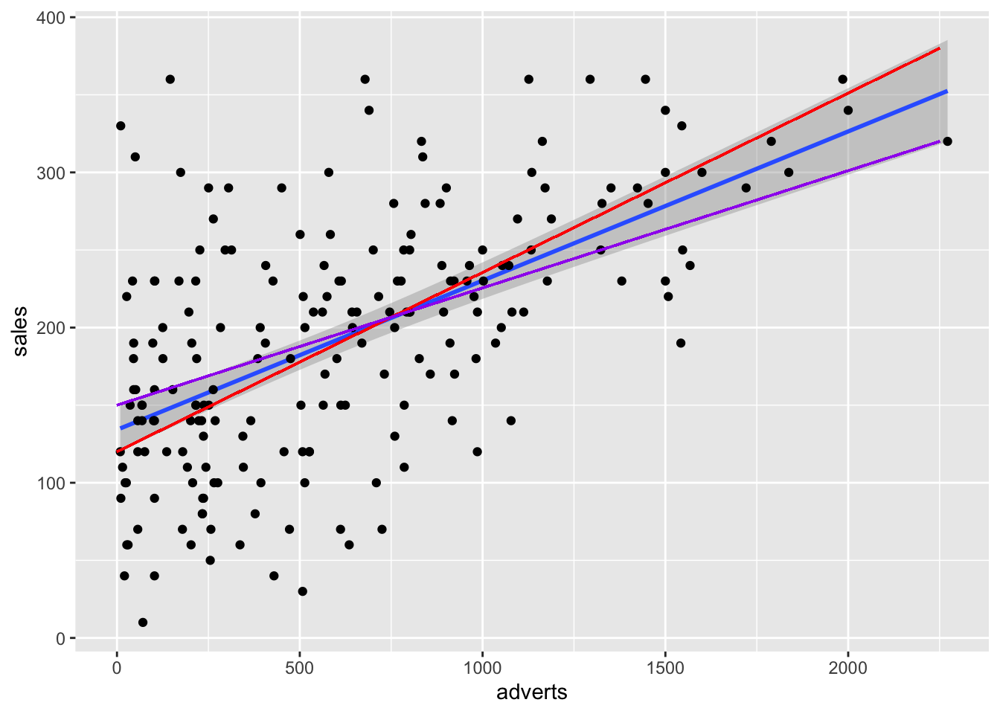
El modelo lineal con la función lm(). ¿Como interpretas los coeficientes y si estos son significativos, si se rechaza la hipótesis nula?
| adverts | sales |
|---|---|
| 10.3 | 330 |
| 986 | 120 |
| 1.45e+03 | 360 |
| 1.19e+03 | 270 |
| 575 | 220 |
| 569 | 170 |
model1=lm(sales~adverts, Album_Sales_1_new)
#summary(model1)
tab_model(
model1,show.df = TRUE,
CSS = list(
css.depvarhead = 'color: red;',
css.centeralign = 'text-align: left;',
css.firsttablecol = 'font-weight: bold;',
css.summary = 'color: blue;'
)
)| sales | ||||
|---|---|---|---|---|
| Predictors | Estimates | CI | p | df |
| (Intercept) | 134.14 | 119.28 – 149.00 | <0.001 | 198.00 |
| adverts | 0.10 | 0.08 – 0.12 | <0.001 | 198.00 |
| Observations | 200 | |||
| R2 / R2 adjusted | 0.335 / 0.331 | |||
18.4.1 Supuestos de la regresión lineal
Igualdad de varianza: En el primer gráfico evaluar si los datos están distribuido más o menos igual. y que no un más variación un un área del gráfico que otro.
Normalidad de los datos: En el segundo gráfico evaluar la figura de qqplot.
Evaluar si hay datos sesgados (atípicos) que influencia los resultados
En el cuarto gráfico evaluar si hay valores que tienen mucho peso si se incluyen o no en el análisis. Estos van a ser identificado
En el presente gráfico hay tres valores que hay que evaluar (1,42,169), estos valores se tiene que asegurar que son correctos. Siempre es bueno remover los valores sesgados y rehacer el análisis para observar cuan diferente son los resultas.
plot(model1) # Evaluar los supuestos, 1. Igualdad de varianza, 2. Normalidad, 4. Datos sesgados (Cook's Distance)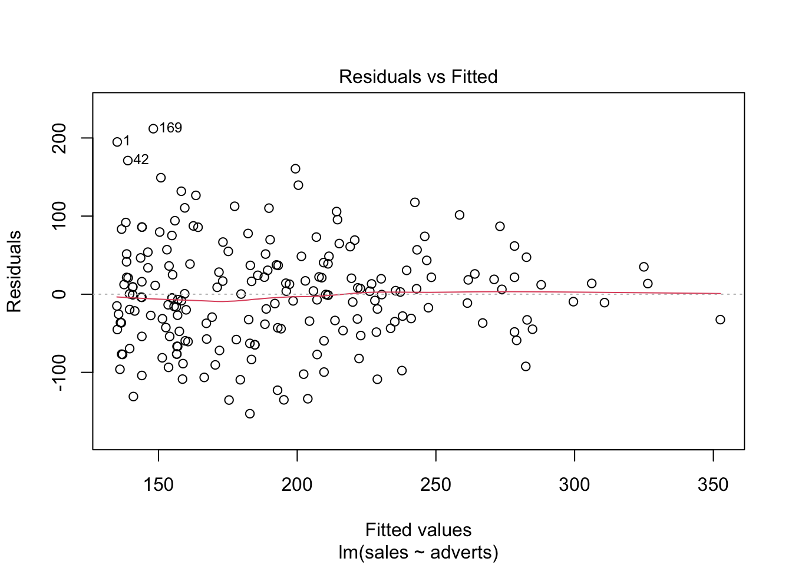
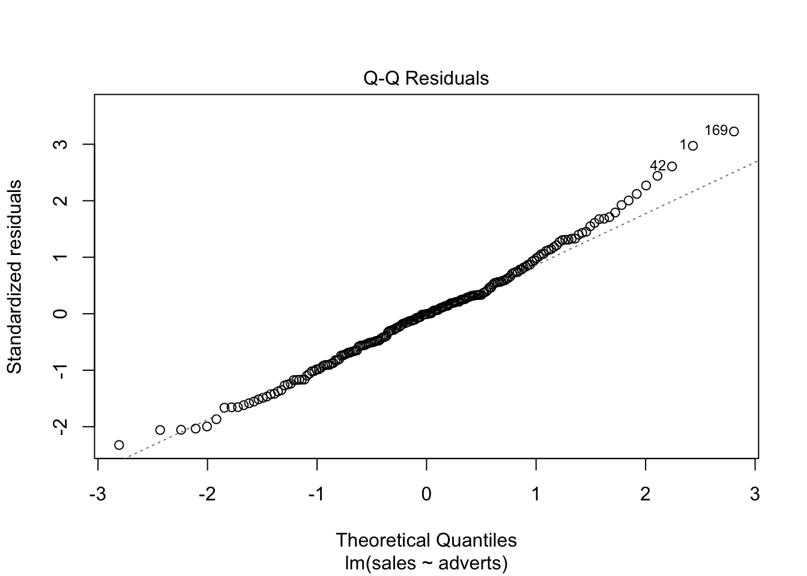
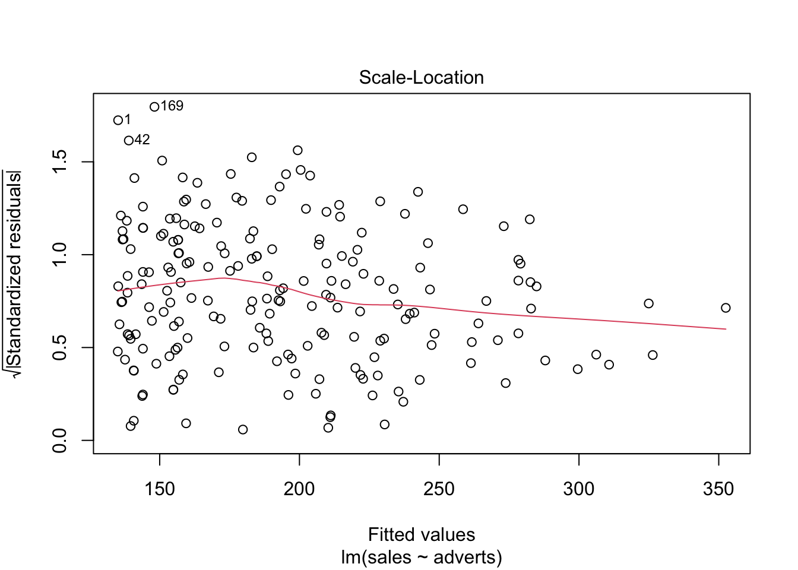
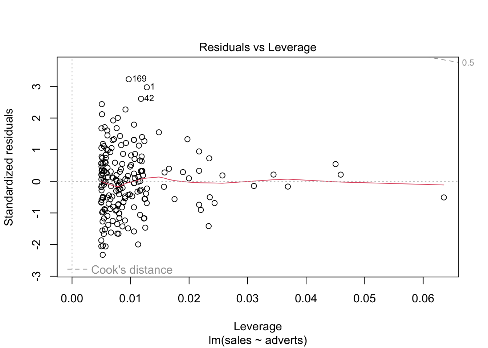
18.5 Cook’s Distance
Evaluar si hay unos valores que sesgan los resultados.
FROM WIKIPEDIA Definition. Data points with large residuals (outliers) and/or high leverage may distort the outcome and accuracy of a regression. Cook’s distance measures the effect of deleting a given observation. Points with a large Cook’s distance are considered to merit closer examination in the analysis.
Detecting highly influential observations There are different opinions regarding what cut-off values to use for spotting highly influential points. A simple operational guideline of D_i>1 has been suggested.
Others have indicated that D_i>4/n, where n is the number of observations, might be used.
Aqui enseño como añadir 1. los valores de “cook.distance” a su archivo 2. Añadir una columna de “secuencia” de los datos 3. Crear una gráfica de las distancia de Cook.
4. Which values have Di larger than 1, which values have Cook’s distances larger 4/n?
4/length(Album_Sales_1_new$adverts)## [1] 0.02
Album_Sales_1_new$cooks.distance<-cooks.distance(model1)
head(Album_Sales_1_new)| adverts | sales | cooks.distance |
|---|---|---|
| 10.3 | 330 | 0.0572 |
| 986 | 120 | 0.011 |
| 1.45e+03 | 360 | 0.0178 |
| 1.19e+03 | 270 | 0.000662 |
| 575 | 220 | 0.000548 |
| 569 | 170 | 0.000207 |
| adverts | sales | cooks.distance | sequence |
|---|---|---|---|
| 10.3 | 330 | 0.0572 | 1 |
| 986 | 120 | 0.011 | 2 |
| 1.45e+03 | 360 | 0.0178 | 3 |
| 1.19e+03 | 270 | 0.000662 | 4 |
| 575 | 220 | 0.000548 | 5 |
| 569 | 170 | 0.000207 | 6 |
tail(Album_Sales_1_new)| adverts | sales | cooks.distance | sequence |
|---|---|---|---|
| 701 | 250 | 0.00141 | 195 |
| 911 | 190 | 0.000804 | 196 |
| 889 | 240 | 0.000321 | 197 |
| 801 | 250 | 0.00101 | 198 |
| 1.5e+03 | 230 | 0.00608 | 199 |
| 786 | 110 | 0.00649 | 200 |
ggplot(Album_Sales_1_new, aes(sequence, cooks.distance))+
geom_point()+
geom_hline(aes(yintercept=4/length(Album_Sales_1_new$adverts), colour="red"))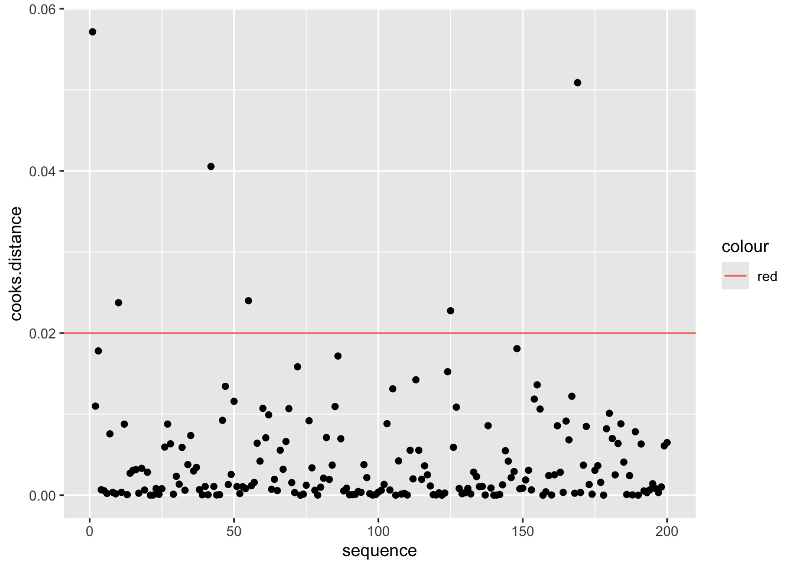
18.7 Paso 1
- Primer paso, mirar los coeficientes.
- El resultado: El coeficiente (intercepto) y la pendiente del model1
18.7.1 Paso 2
- Evaluar si los coeficientes son diferentes de cero.
La primera hipótesis, Determinar si el intercepto es igual a cero. Mira el valor de p, Pr(>|t|), determinar si el valor es menor de 0.05, si lo es se rechaza la Ho y por consecuencia tenemos confianza que el intercepto no incluye cero.
La segunda hipótesis nula Deteminar si la pendiente es igual a cero. Mira el valor de p, Pr(>|t|), como el valor es menor de p=0.05, se rechaza la Ho y por consecuencia tenemos confianza que la pendiente no incluye cero.
18.8 Paso 3
Evaluar si los datos cumple con los supuestos.
Igualdad de varianza, usa la gráfica de residuales
Normalidad, qqplot
Valores sesgados, la prueba de Cook’s
##
## Call:
## lm(formula = sales ~ adverts, data = Album_Sales_1_new)
##
## Residuals:
## Min 1Q Median 3Q Max
## -152.949 -43.796 -0.393 37.040 211.866
##
## Coefficients:
## Estimate Std. Error t value Pr(>|t|)
## (Intercept) 1.341e+02 7.537e+00 17.799 <2e-16 ***
## adverts 9.612e-02 9.632e-03 9.979 <2e-16 ***
## ---
## Signif. codes: 0 '***' 0.001 '**' 0.01 '*' 0.05 '.' 0.1 ' ' 1
##
## Residual standard error: 65.99 on 198 degrees of freedom
## Multiple R-squared: 0.3346, Adjusted R-squared: 0.3313
## F-statistic: 99.59 on 1 and 198 DF, p-value: < 2.2e-16
tab_model(
advertizingReg,show.df = TRUE,
CSS = list(
css.depvarhead = 'color: red;',
css.centeralign = 'text-align: left;',
css.firsttablecol = 'font-weight: bold;',
css.summary = 'color: blue;'
)
)| sales | ||||
|---|---|---|---|---|
| Predictors | Estimates | CI | p | df |
| (Intercept) | 134.14 | 119.28 – 149.00 | <0.001 | 198.00 |
| adverts | 0.10 | 0.08 – 0.12 | <0.001 | 198.00 |
| Observations | 200 | |||
| R2 / R2 adjusted | 0.335 / 0.331 | |||
18.9 Alternativa para Gráficar los residuales
18.9.1 Plot the residuals and the fitted values
18.9.1.1 Evaluating residuals:
If we observe that the residuals are randomly distributed (no pattern, a straigth line), then we can assume that there is equality of variance along the “x” axis.
18.9.1.2 Definition of Residuals
A quantity remaining after other things have been subtracted or allowed for. FROM Wikipedia
A residual (or fitting deviation), on the other hand, is an observable estimate of the unobservable statistical error.
# "advertizingReg", nota que este no es un data frame pero un modelo
# The main figure
ggplot(Album_Sales_1_new,aes(x=adverts, y=sales))+
geom_smooth(method=lm, se = TRUE)+
geom_point()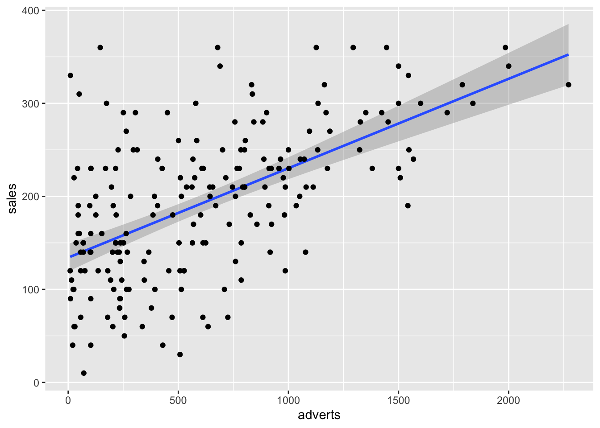
# Graficando los residuales, metodo 1
ggplot(model1, aes(x=.fitted, y=.resid))+
geom_point()+
geom_smooth(method=lm)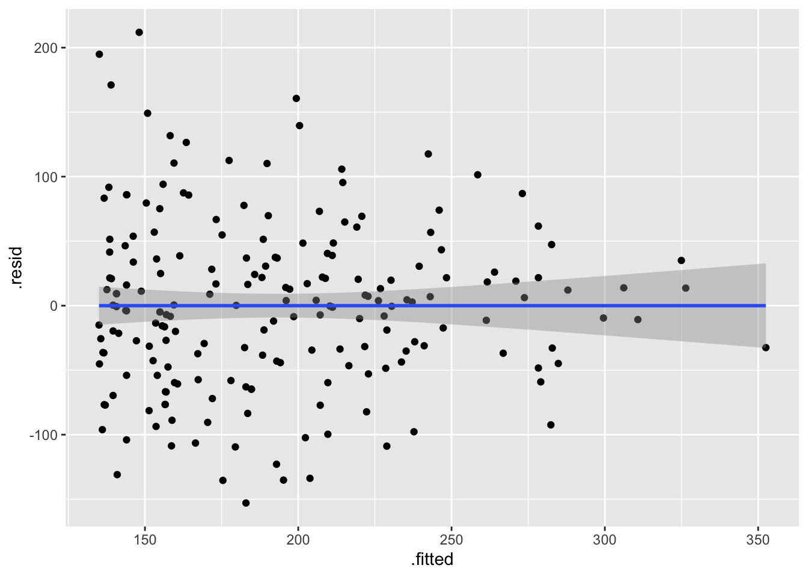
18.10 Porque podemos usar la alternativas anterior
Cuando R corre un analisis, hace muchos calculos y guarda parate de estos calculos como lista de datos.
Para ver algunos de los valores calculado uno pone el nombre del modelo y la añade el $ y deberia aparecer la lista de los valores calculados. o otra alternativa es usar la función ls() = list() para ver el nombre de las variables
ls(model1)## [1] "assign" "call" "coefficients" "df.residual"
## [5] "effects" "fitted.values" "model" "qr"
## [9] "rank" "residuals" "terms" "xlevels"
# model1$residuals # Por ejemplo para ver los residuales del modelo18.11 Ejercicio #1
Usa los enviado por MSTeam llamado “Alturas_Humanos
En este archivo vemos tres columnas. Genero, Altura de la persona (Altura_cm) y Peso de la persona (Peso_kg)
Evalua cada paso para determinar si hay una relación entre la altura y el peso de las personas.
Haz un gráfico de la relación entre la altura y el peso
Evalúa el modelo de regresión entre las dos variables
Evalúa los supuestos
library(readr)
Alturas_Humanos <- read_csv("Data_files_csv/Alturas_Humanos.csv")
head(Alturas_Humanos)| Genero | Altura_cm | Peso_kg |
|---|---|---|
| Hombres | 174 | 96 |
| Hombres | 189 | 87 |
| Mujer | 185 | 110 |
| Mujer | 195 | 104 |
| Hombres | 149 | 61 |
| Hombres | 189 | 104 |